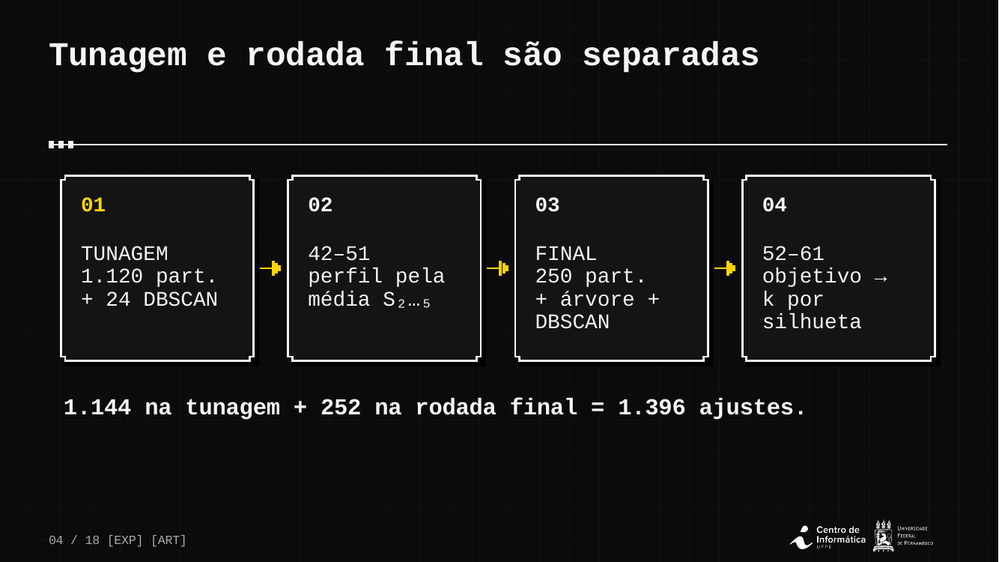
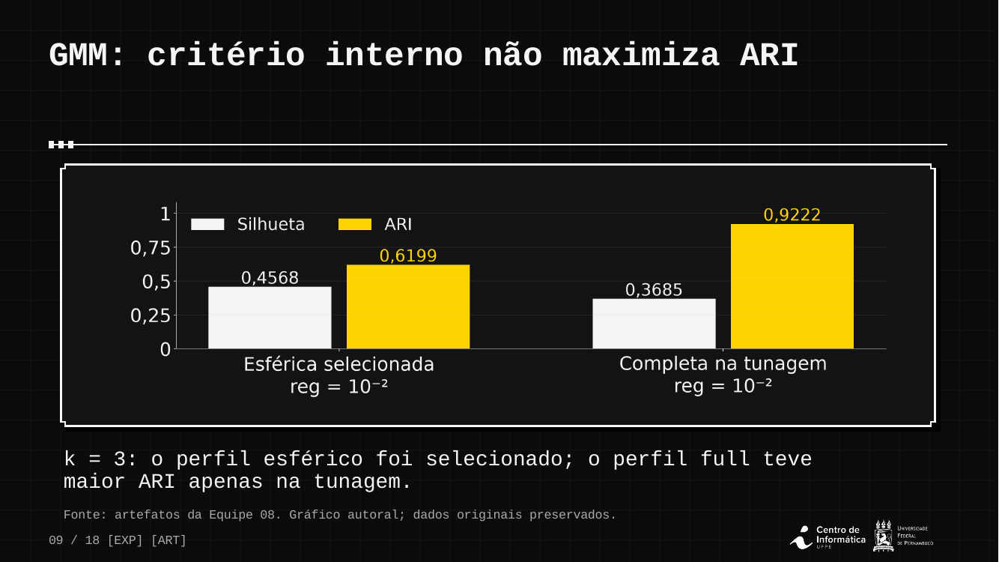
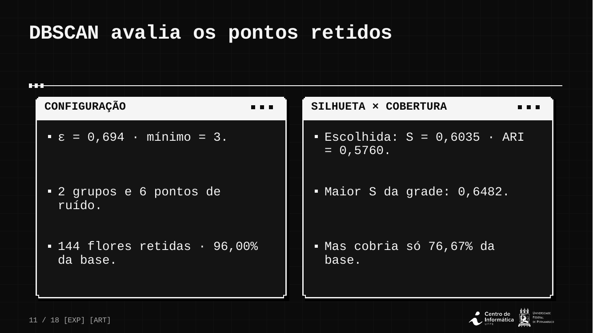
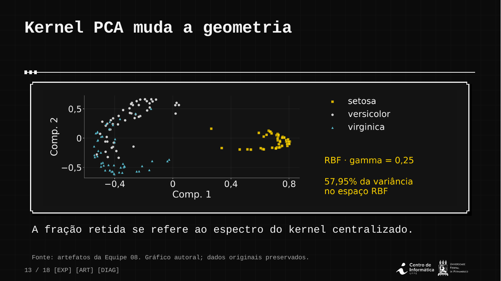
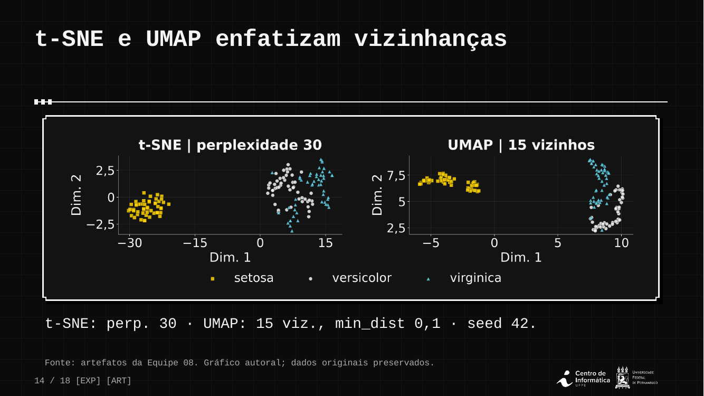
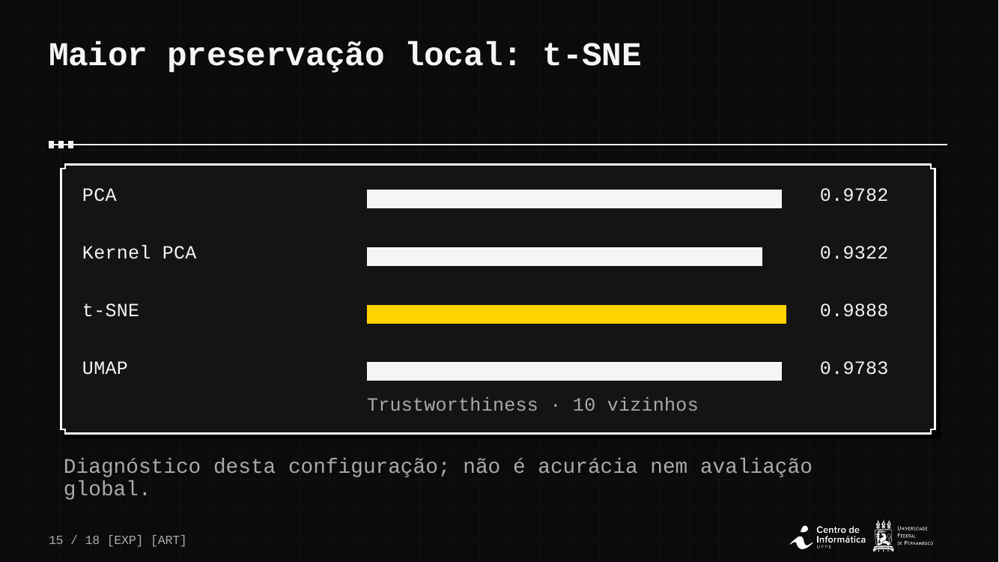

1. Iris: grupos e projeções2. Três espécies; quantos grupos?3. Sete métodos, cinco perspectivas

4. Tunagem e rodada final são separadas5. Silhueta e ARI respondem a perguntas distintas6. Rodada final: silhueta favorece k = 27. Tunagem: inicialização e difusividade8. Kernel, GMM e DBSCAN na tunagem

9. GMM: critério interno não maximiza ARI10. UPGMA: ARI 0,7184 no corte k = 3

11. DBSCAN avalia os pontos retidos12. PCA retém 95,80% em dois eixos

13. Kernel PCA muda a geometria

14. t-SNE e UMAP enfatizam vizinhanças

15. Maior preservação local: t-SNE16. O alcance das conclusões é descritivo